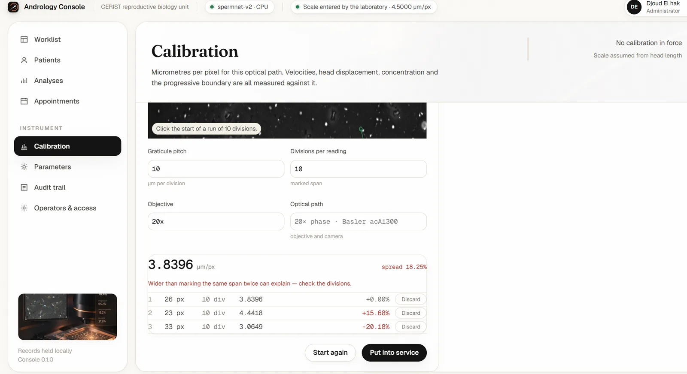
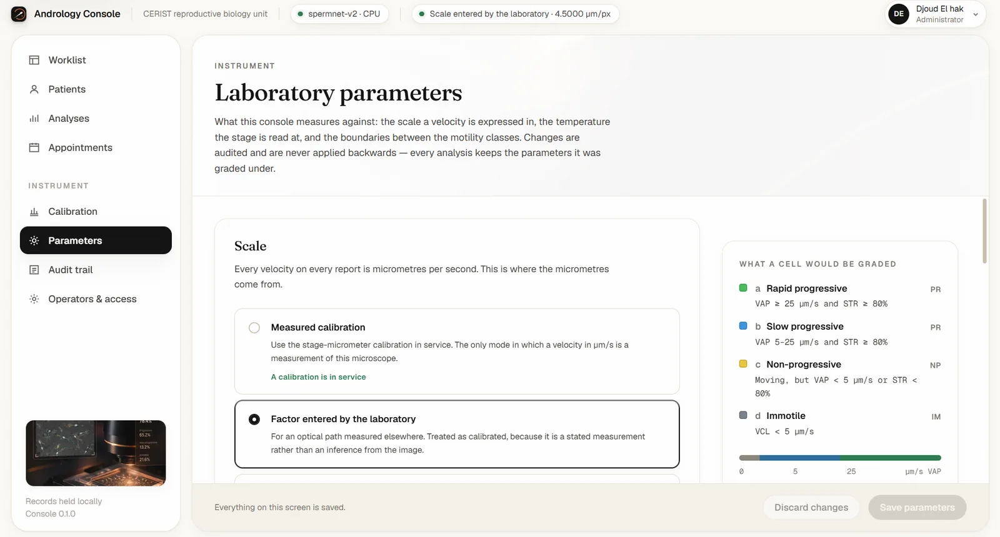
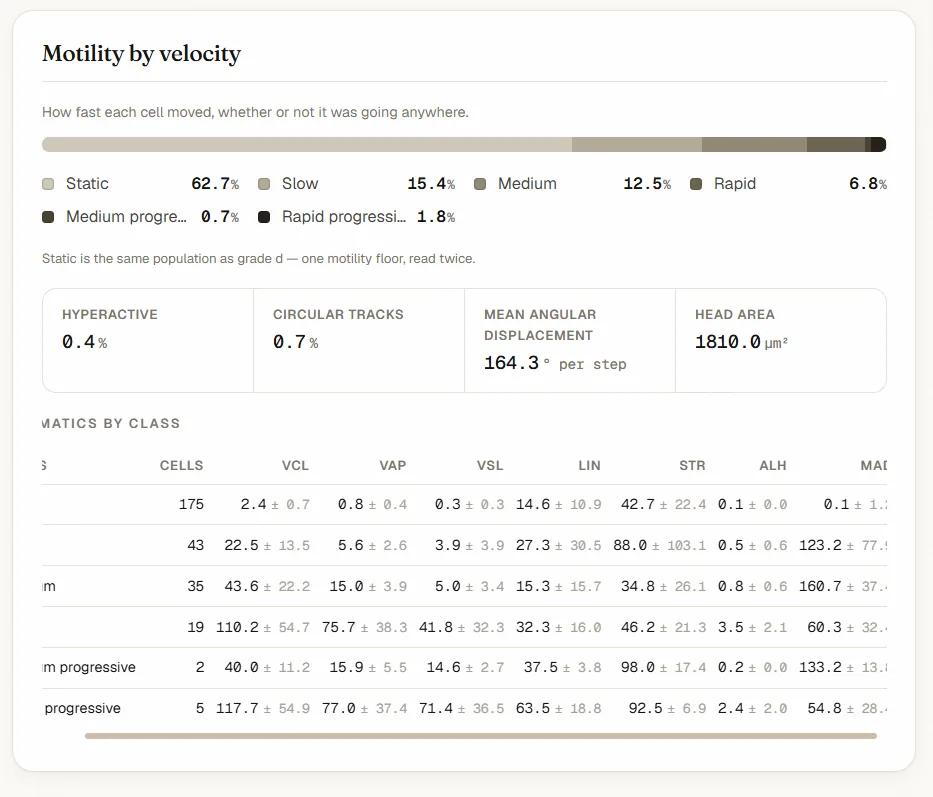
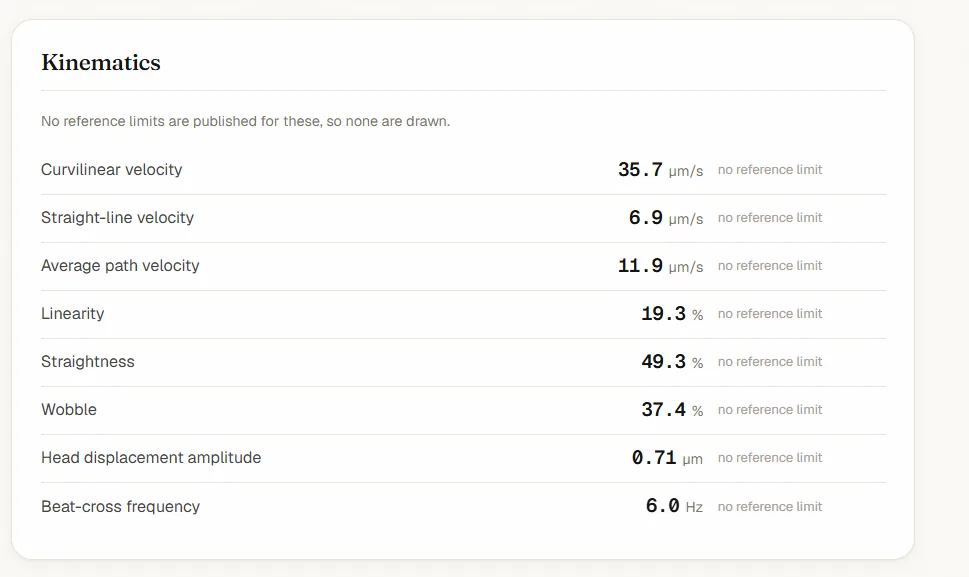
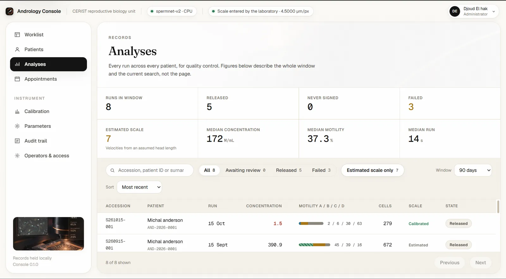
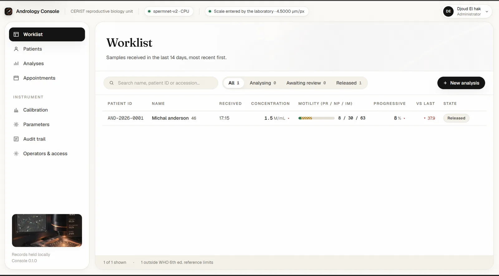

SpermNet and the Andrology Console
Seven months at CERIST building automated sperm motility analysis that runs on a laboratory PC without a GPU: a 0.38 M-parameter detector, a tracker with no appearance model, a calibration that is measured instead of assumed, and the desktop application around them.
- Context
- Research internship, CERIST
- Period
- Sept. 2025 to Mar. 2026
- Role
- Designed, built and evaluated the system; wrote the preprint
- Stack
- PyTorch, OpenCV, ONNX Runtime, NumPy, FastAPI, Electron, React, TypeScript
01
The problem
Motility is one of the first things read in a semen examination. To measure it from video, every spermatozoon has to be found, followed from frame to frame, turned into physical velocities and given a motility grade. Each of those steps is a computer vision problem with unusual numbers.
- A head covers a median of 93.6 px², about 10 pixels across: 99.7% of detections are "small" in the COCO sense.
- A frame holds from about 85 cells in a weak sample to 218 in a strong one, at 25 frames per second, with low contrast.
- The number a clinician reads, the motile fraction, is a ratio. A false detection that does not move counts as an immotile cell, so the errors that matter are not the ones F1 weighs most.
- The laboratory works on ordinary PCs: no GPU, and no data leaves the workstation.
I treated the clinical number, not the detector score, as the thing to get right, and replaced every assumption of the first version by a measurement.
02
From a heavy baseline to a measured system
I started from a conventional pipeline, YOLO11m with DeepSORT on colour-inverted frames, and audited it against annotation and measurement instead of tuning it. Each later version replaced one assumption of the previous one with something measured.
| Version 1, baseline | Version 2, redesign | Version 3, measured and deployed | |
|---|---|---|---|
| Detector | YOLO11m, 20.1 M parameters, input 640 | SpermNet, 0.38 M, stride 2, three input channels | Unchanged, exported to ONNX |
| Association | DeepSORT with a 2.2 M MobileNetV2 re-ID network | Motion-gated online tracker, no appearance model | Unchanged |
| Frames | Colour-inverted, head-shape gate | Native polarity, no gate, no detection cap | Unchanged |
| Velocity scale | From an assumed head length (4.7 µm) | From head length, until the micrometer test | Optical train, or scale-free criterion |
| CPU per clip | 195 s | 10.4 s | 10.4 s |
| What it exposed | Merged touching heads, untracked cells, tracks broken after 15.4 of 25 frames on average, misgrades | Scale off by +38.7% against the stage micrometer | Still open: public benchmark, second annotator, higher frame rate |
What the audit of version 1 found
- 195 s of CPU time for a one-second clip: unusable on a laboratory PC.
- A head-shape gate taken from anatomy (aspect ratio 1.4 to 2.0) contained only 29.7% of annotated heads. At 10 px, a head's aspect ratio is mostly pixel quantisation. Applied to version 1's detections, the gate cut recall from 0.593 to 0.074.
- The 300-detection cap was hit in 33.3% of frames, so dense samples silently lost cells.
- Heads are bright on a dark field (median intensity 190 against 33 for the background), so inverting the colours only made the input less natural for the detector.
03
Data
Raw dark-field acquisitions were reviewed frame by frame with OpenCV. One-second excerpts with a stable field (no refocus, no stage drift) were kept and re-encoded as uncompressed 8-bit AVI, so no codec artefact enters the measurements.
| Item | Value |
|---|---|
| Recordings | 15 = 5 men × 3 motility strata (weak, medium, strong) |
| Frames | 780×580 px, 25 fps, 25 frames (1 s), 8-bit |
| Optics | objective 10×, sensor pitch 3.1 µm, 0.3100 µm/px |
| Detection labels | 1,349 heads in 48 patches of 192×192 |
| Tracking labels | 1,061 boxes, 46 identities, 25 frames |
| Total labelled objects | 2,410 |
Evaluation is five-fold cross-validation grouped by video, so no model is ever scored on a clip it saw in training.
04
SpermNet, the detector
The detector gains came from geometry, not from capacity. A median head spans 4.8 feature cells at stride 2 but 1.2 at stride 8, the finest level of a YOLO11 detection head, and 0.3 at stride 32. So I designed a small network that keeps resolution instead of a deep one that throws it away.
- Size: 375,621 parameters, 53 times fewer than YOLO11m (20.05 M), in a 1.5 MB file.
- Training: focal-type loss on the heatmap and L1 on size and offset, about 17 minutes per model on two CPU cores.
- Output: decoding applies 3×3 peak suppression, adds the sub-pixel offset and reads the size at the peak. Sub-pixel centroids matter because velocity differentiates position noise.
- Tracking: detections are linked online. Each track predicts its next position from its recent motion, and detections are assigned inside a distance gate by linear assignment. No appearance network.
05
Calibration and grading
Velocities in µm/s depend on the scale in micrometres per pixel. Version 1 estimated it from the specimen: an assumed head length of 4.7 µm divided by the median head length in pixels. A stage micrometer showed that this fails structurally.
| Source | Scale | Effect |
|---|---|---|
| Stage micrometer | 0.3100 µm/px | reference |
| Head-length estimator, version 1 | 0.397 to 0.496 µm/px | mean bias +38.7%; total motility inflated by 3.0 to 12.9 points |
| Head length refitted to its best constant | 3.470 µm reference | bias gone, but residual RMS 7.1% and worst case +18.0% |
| Optical train, version 3 | 0.3100 µm/px | s = sensor pitch × binning / (objective × coupler); no specimen term |
The spread is not noise. Head size differs between men (median head area per recording from 63.9 to 103.1 px²), so a ruler made from the specimen gives every specimen a different ruler. Version 3 takes the scale from the instrument constants instead.
Grading without any scale
When no calibration is available, the engine grades scale-free: a cell is motile when its velocity in pixels divided by its own head length in pixels is at least κ = 1.47 head lengths per second. Both sides are in pixels, so the unknown scale cancels. On the 15 recordings this reproduces the calibrated immotile fraction within 0.03 points on average, 1.52 at worst; PR and NP agree within 0.92 and 1.24 points. In leave-one-recording-out validation the same κ was selected in all 15 folds.
06
Results
| Detector | Params | AP | Precision | Recall | F1 |
|---|---|---|---|---|---|
| SpermNet | 0.38 M | 0.771 | 0.739 | 0.801 | 0.769 |
| YOLO11m, tuned (conf 0.084) | 20.05 M | 0.677 | 0.605 | 0.802 | 0.690 |
| YOLO11m, deployed (conf 0.25) | 20.05 M | 0.677 | 0.691 | 0.593 | 0.638 |
| Classical baseline | — | 0.426 | 0.801 | 0.517 | 0.628 |
The error that costs the clinician
For an F1 difference of 0.08, the error on the number a clinician reads differs sevenfold. A detector gap that looks modest in F1 is not modest clinically, which is why I rank errors by their effect on the endpoint.
Tracking
| System | MOTA | IDF1 | HOTA | Mean track length |
|---|---|---|---|---|
| SpermNet + motion tracker | 0.440 | 0.724 | 0.460 | 21.0 of 25 frames |
| YOLO11m + motion tracker | 0.251 | 0.621 | 0.394 | — |
| Version 1, YOLO11m + DeepSORT | — | — | — | 15.4 of 25 frames |
Association is not the bottleneck; detection is. On a synthetic benchmark matched to the data's motion statistics, the motion tracker reaches HOTA 0.963. On real identities, three trackers differ by at most 0.011 HOTA, while changing the detector moves IDF1 from 0.621 to 0.724. Offline min-cost-flow linking brings no gain for 122 times the run time, and halving precision costs 4.5 times more HOTA than halving recall.
What did not help
| Component | Observation |
|---|---|
| Native resolution, stride 2, centre-point head | F1 0.690 → 0.769 at equal recall: most of the gain |
| Motion channels | about +0.02 recall only |
| Flip test-time augmentation | AP +0.009, precision −0.021: not adopted |
| Global min-cost-flow linking | no gain, 122× run time: not adopted |
| Morphometric head-shape gate | recall 0.593 → 0.074: removed |
07
The Andrology Console
The engine ships inside a desktop application so a laboratory can use it on its own PC, with records kept on that workstation.
- ONNX with verified parity: on real recordings the ONNX export gives identical detections in every frame, with a maximum centre difference of 6.1 × 10⁻⁵ px. Peak suppression and decoding are re-implemented in NumPy.
- A smaller installer: dropping PyTorch (1.2 GB on disk to run a 1.5 MB model) took the installer from about 1.7 GB to 450 MB.
- Refuse rather than guess: every analysis is stamped with the thresholds and scale it was graded under; quantities that depend on an unknown scale are withheld, and the application never updates itself, so a measurement cannot change between samples without a decision.
- Security: roles and sessions, a hash-chained audit log, and three rounds of security review (find, fix, re-attack the fixes), each leaving regression tests.
- Workflow: patients, collection diary, worklist, upload and queue, overlay review against the original video, calibration management, graded results, reports in PDF, JSON, CSV and Excel, in English and French.













08
Limits and what comes next
- Labels come from one annotator over a small area (1,349 heads in 48 patches, one 320×320 tracking window).
- Five men, 15 hand-selected clips and one microscope: selection may favour easy fields, and κ belongs to this detector and these optics.
- The YOLO baselines were not retrained per fold under the same budget.
- At 25 fps, velocity magnitudes and ALH are under-sampled and beat-cross frequency is unusable, so only ratio-based endpoints are claimed (motile fraction, PR/NP/IM, LIN, STR, WOB).
- External validation (VISEM-Tracking, a blind manual count, a second annotator, a higher frame rate) is still to do. The system is not presented as clinically validated.
The work is written up as a single-author preprint, SpermNet: A CPU-Efficient Spatio-Temporal Detector and Motion Tracker for Sperm Motility Analysis with Optical and Scale-Free Calibration, in preparation.